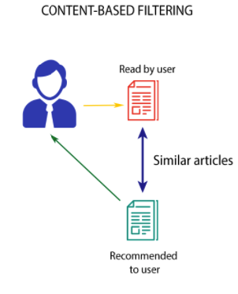

Aravind
Rajendran
Education
-
Master Of Science in Computer Engineering
Arizona State University - Tempe, Az -
B.E in Electrical Engineering
Anna University - Chennai, India
Work Experience
-
Mathworks
Software Engineer Intern -
Dept. of MARCOMM (W. P. Carey School of Business)
Web Coordinator -
Tata Consultancy Services
Java Developer
Interests
-
Private Code Challenges (CodeForces, A2OJ)
-
Hackathons (AMEX, MS, Facebook Hacker Cup, Google Code Jam)
Social Adaptive Recommender System
Adding brains to Discussion forums and making learning easier and more reliable.
- Web Application
- Controller
Question to start with
What ?
User finding his/her query about ‘Java’ topic answered with more PRECISION than the existing models
Why ?
Makes user interested in the topic and creates a learning model. Encourages user to learn and develop.
How ?
- Leverage on the existing data and create the new platform.
- Use data mining techniques to make user find better results
- Connect peer users together for collaboration
Application Architecture
Controller
Design Decisions
Modules
-
User Interaction Module
- Tools: HTML5, CSS3, Javascript, AngularJS, Google
-
Data Store Module
- Tools: MongoDB, MySQL
-
Data Mining Module
- Tools: Apache Lucene, Weka
-
Visualization Module
- Tools: Google Charts API, D3.JS

User Interaction Module
- Login/User-Authentication form
- Create User form
- User Search Query form
- User History of topics search
- Data Visualization

Data Store Module
- Stack Exchange API Dataset 1year : API Link
- Data Preparation and Storage
- Transactional Databases
- Database Schema, Tables, Adapters
- Hosting on cloud (Amazon Web Services EC2 instance)
Data Mining Module
- Labelling, Indexing, Retrieving Results
- User Profiling using Correlation
- Content-Based Filtering
- Collaborative Filtering
Pearson Correlation Coefficient
Statistical measure of the similarity between 2 users
Content Based Filtering
Reccommend items that are similar to those that a user liked in the past
Collaborative Filtering
Predicting what users will like based on their similarity to other users
Visualization Module
- Google Charts API
- D3.js
- Pie chart: Topic Frequency (Tags)
- Sankey Chart: Users(peers)<->Topic mapping

Challenges Faced and Solutions
Feedback Mechanisms
Grow with the flow. More bang for the buck to the user.
- Implicit (40%) - Collected while Registering a new user
- Explicit (60%) - Collected from History of user queries
Scalability problem
More topics, Fresh data added to StackExchange API
- Python script for automated data acquiring
Cold Start Problem
No user data to provide results/visualizations
- Crowd Sourcing data
- Using Capture Replay tools
Sparse DataSet Problem
Very less user data to provide Accurate results/visualizations
- Dimensionality reduction using PCA
Projects Gallery
Android Application
Efficient way to address the chore of finding parking spaces.
Arduino based Data Aquisition module
Android application interacting with user
Cloud Service to host all data via Rest-API
Big Data Analysis
Determining the top hotspots of NewYork Yellow-Cab activity
Spatio-Temporal Big data Analysis using Hadoop and Apache Spark
1 month data
Map-Reduce techniques
Android Application
Efficient way to address the chore of finding parking spaces.
Arduino based Data Aquisition module
Android application interacting with user
Cloud Service to host all data via Rest-API